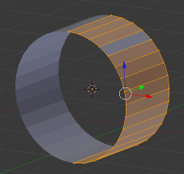

UV Mapping de uma aeronave
Neste tutorial vamos repetir procedimentos utilizados em tutoriais anteriores. Se preferir não modelar uma nova aeronave, utilize a aeronave que modelou no exercício Modelar uma Nave.
1- Comece por criar uma cena limpa de objectos. Clique em “Delete” (ou X) para apagar o cubo.
2- Introduza um cilindro. Aplique uma rotação de 90º no eixo X.
Apague apenas os vértices que estão no centro do topo e da base do cilindro para ficar com uma forma semelhante à da imagem.
3- Apague Apague os vértices de um dos lados do cilindro. Aplique o modifier Mirror.

4- Introduza uma imagem de referência para guiar a modelação (sugestão: http://richard.ferriere.free.fr/3vues/fury_fj1_3v.jpg).

5- Utilize a extrusão e Loop Cut para ir criando mais vértices.
Vá alinhado os vértices na visão lateral e de topo (ortogonal) até obter uma forma próxima da imagem abaixo.


Na imagem acima foram aplicados 2 materiais: um para o corpo do avião, outro para o cockpit.
6- Quando estiver minimamente satisfeito com a forma, aplique um modifier Subdivision Surface (Value: 2) e aplique Smooth (botão no painel de ferramentas).

7- Altere a cor do material do corpo da aeronave para um verde militar escuro.

8- Adicione uma textura e escolha o tipo Clouds.

9- No painel de texturas, desça até às opções de “Influence” e substitua a cor original (magenta) por um castanho.

10- Seleccione a lâmpada inserida por pré-definição (tipo Lamp) e mude o seu tipo para Hemi.

11- Renderize (F12) para ver o efeito do “camuflado”. Se desejar, pode utilizar o menu de Render Slots para modificar configurações, fazer experiências, e voltar a renderizar sem perder o render prévio.
Active a Slot 2; altere o Noise de Soft para Hard (painel de texturas); renderize (F12). Agora, se activar a Slot 1 vê o render anterior e na Slot 2 o último render.

12- No painel de modifiers, faça Apply ao modifier Mirror tornando as modificações por ele criadas – o espelhamento – definitivas. Assegure-se que tem activada a opção do modifier Subdivision Surface que permite visualizar a modificação em Edit Mode.

13- Seleccione arestas nas asas e nos lados do tronco do avião de forma a criar “caixas”. Crie “linhas de corte” (CTRL+E > Mark Seam). Nessas caixas irão surgir imagens/logótipos.


14- Com as faces das “caixas” seleccionadas, faça Unwrap (U). Pode seleccionar as faces todas e fazer Unwrap mas como só vamos introduzir texturas-imagens nas caixas, se apenas seleccionar as faces das “caixas” o UV Layout será mais claro, terá mais espaço...
15- Na janela de UV/Image Editor deverão surgir agora as faces que correspondem às “linhas de corte” por si definidas. Tente organizar melhor as faces, alinhando algumas arestas/vértices.


16- Exporte o UV Layout. Utilize um programa de edição de imagem para introduzir algumas imagens a seu gosto. Quando exportar a imagem (em PNG), exporte apenas a camada com os ícones/logótipos.

17- Quando importar a textura, deverá ter algo semelhante à imagem abaixo.

18- Na janela 3D View deverá ter algo como isto:

19- Se atentar na imagem, é visível que uma das cabeças de GNU está investida. Na janela de UV/Image Editor manipule os vértices/arestas/faces (rotação, escala, etc.) de forma a corrigir eventuais erros.
Nesta fase, poderá ser útil dividir o ecrã em 2 janelas (3D View e UV/Image Editor) para poder manipular os vértices/arestas/faces na janela de UV/Image Editor e ir vendo o resultado em tempo real na janela de 3D View.

20- Eis o resultado do noss mapeamento:

Sugestões
- Refaça o UV Layout criando uma “linha de corte” em torno das faces do cockpit;
- Crie um UV Layout para todo o avião.